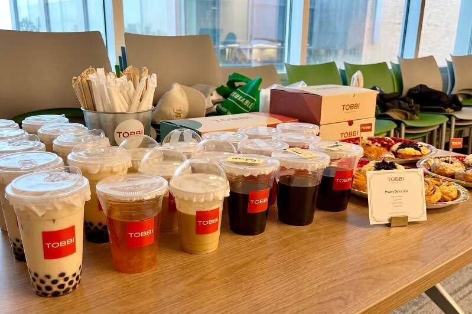

Viet Youth Readiness Hub hosts back-to-school orientation and Vietnamese language celebration
TORONTO, Aug. 31, 2026 — The Viet Youth Readiness Hub (VYRH), a youth initiative of the Canada Vietnam Cultural & Educational Council (CVCEC), hosted a community orientation and networking event in Toronto to help Vietnamese students prepare for the new school year.
The event was held ahead of the Day for Honouring the Vietnamese Language on Sept. 8. It brought together newly arrived international students and Canadian-born Vietnamese youth for activities held entirely in Vietnamese, helping newcomers build confidence for their studies and giving local youth a chance to practise the language.
VYRH was launched in April 2026 to respond to the practical needs of families navigating the Canadian school system. The non-commercial, community-driven initiative is led by CVCEC founder and president Phan Thi Quynh Trang and was developed through the Leading Urban Change program at the University of Toronto’s School of Cities.
The hub focuses on three areas:
- an education model that brings Vietnamese language learning, cultural activities and global citizenship into urban public school settings, starting in Toronto;
- support for cultural integration and identity, helping newcomer and Canadian-born youth stay connected to their roots;
- collaboration with school boards, universities and community organizations to co-design culturally relevant programs.

The event was sponsored by Tobbi Cafe at 678 Bloor St. W., which CVCEC describes as Toronto’s first blind box cafe. CVCEC and VYRH thanked the cafe and its representative, Hannah, for their support and for providing a welcoming space for newcomer students.

About CVCEC
The Canada Vietnam Cultural & Educational Council (CVCEC) is a federally incorporated not-for-profit organization based in Toronto. It offers Vietnamese language and culture classes for children, helps newcomer and international students settle into Canadian schools and connects education communities in Canada and Vietnam. More information is available at cvcec.org.
About the Viet Youth Readiness Hub
Launched in Toronto in April 2026, the Viet Youth Readiness Hub (VYRH) is a CVCEC initiative that helps Vietnamese students and families understand Canadian schools through orientation sessions, mentoring and youth leadership opportunities.
-30-
Media contact
Phan Thi Quynh Trang, founder and president
Canada Vietnam Cultural & Educational Council
contact@cvcec.org